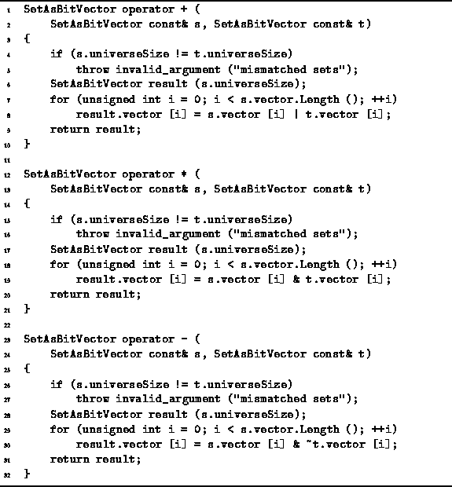

Data Structures and Algorithms
with Object-Oriented Design Patterns in C++
Data Structures and Algorithms
with Object-Oriented Design Patterns in C++
The implementations of the union, intersection, and difference operators
(+, *, and -, respectively)
for operands of type SetAsBitVector are shown in Program  .
The code is quite similar to that for the SetAsArray class
given in Program .
.
The code is quite similar to that for the SetAsArray class
given in Program .

Program: SetAsBitVector Class Union, Intersection and Difference Operator Definitions
Instead of using the Boolean operators &&, || and !,
we have used the bitwise operators &, | and .
By using the bitwise operators,
 bits of the result are computed
in each iteration of the loop.
Therefore, the number of iterations
required is
bits of the result are computed
in each iteration of the loop.
Therefore, the number of iterations
required is  instead of N.
The worst-case running time of each of these operations
is
instead of N.
The worst-case running time of each of these operations
is  .
.
Notice that the asymptotic performance of these SetAsBitVector class operations is the same as the asymptotic performance of the SetAsArray class operations. I.e., both of them are O(N). Nevertheless, the SetAsBitVector class operations are faster. In fact, the bit-vector approach is asymptotically faster than the the array approach by the factor w.
 Copyright © 1997 by Bruno R. Preiss, P.Eng. All rights reserved.
Copyright © 1997 by Bruno R. Preiss, P.Eng. All rights reserved.